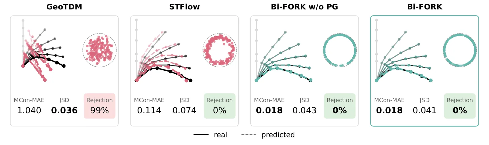
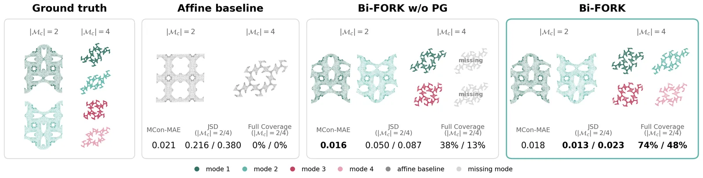
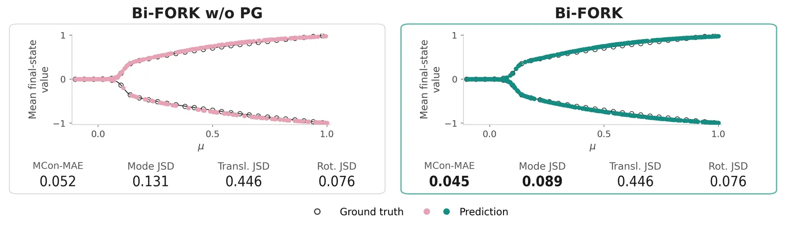

O problema: quando um input gera muitas respostas corretas
Bifurcações aparecem em toda parte na física: uma coluna comprimida que flamba, um fluido que muda de regime, uma mistura que se separa em fases. O que todas essas situações têm em comum é que, a partir de um certo ponto crítico, o sistema deixa de ter uma única solução estável e passa a admitir múltiplas configurações igualmente válidas. Uma viga pode flambar para a esquerda ou para a direita. Uma mistura pode formar padrões espaciais de várias formas. Todas essas soluções são físicas, todas obedecem às mesmas equações.
Métodos numéricos clássicos, como elementos finitos, conseguem calcular essas soluções — mas precisam de análises de estabilidade, continuação numérica e múltiplas rodadas de solução para mapear toda a estrutura de bifurcação. Isso é caro. Machine learning poderia amortizar esse custo: treinar uma vez, inferir rápido. Mas há um problema fundamental: a maioria dos modelos de ML assume uma relação um-para-um entre entrada e saída. Quando você treina uma rede neural discriminativa em dados de bifurcação, ela tenta prever uma única resposta para cada input e acaba calculando a média entre as soluções válidas — o que geralmente não é uma solução física.
Alguns trabalhos recentes começaram a atacar o problema com modelos probabilísticos: GANs, difusão, flow matching. Mas quase todos tratam a multiplicidade como incerteza epistêmica ou perda de detalhe em escalas finas. Poucos encaram a bifurcação como causa estrutural da multiplicidade. E mesmo esses trabalhos ficam limitados a sistemas pequenos, com no máximo algumas centenas de graus de liberdade e grupos de simetria discretos conhecidos. Escalar para sistemas grandes, com milhares ou centenas de milhares de pontos, permanecia um desafio aberto.

Por que escalar é difícil
O desafio central é garantir coerência global: todas as partes do sistema, em todos os instantes de tempo, precisam concordar sobre qual ramo da bifurcação estão realizando. Uma viga que flamba para a esquerda em uma ponta e para a direita na outra não é solução válida. Uma trajetória que muda de ramo no meio do caminho também não é. Além disso, bifurcações costumam ser eventos raros em trajetórias longas. Treinar um modelo autorregressivo frame a frame teria dificuldade em capturar esse aspecto crucial do comportamento, justamente porque ele aparece pouco nos dados.
A solução proposta pelos autores é prever a trajetória inteira de uma vez, permitindo que o modelo represente a escolha de ramo globalmente no espaço latente, para todos os passos e elementos simultaneamente. Mas isso cria outro problema: surrogates baseados em grafos (GNNs) comunicam informação por message passing local. À medida que o sistema cresce, coordenar essa escolha global fica cada vez mais difícil, devido a fenômenos como oversmoothing e oversquashing — a informação se dilui ou se perde ao atravessar muitas camadas.
Avaliar também não é trivial. Métricas pontuais, como rank histograms ou CRPS, verificam calibração local mas não detectam se as amostras formam trajetórias coerentes. Métricas do tipo best-of-K ignoram a maior parte da distribuição predita. Distâncias genéricas entre distribuições podem detectar colapso de modos, mas ficam difíceis de estimar em alta dimensão e não capturam a estrutura de simetria que organiza as soluções.
A ideia: latent flow matching e repulsão entre amostras
Bi-FORK é um framework generativo que aprende a distribuição de trajetórias completas em sistemas que bifurcam. A arquitetura tem dois estágios. O primeiro comprime a trajetória inteira — geometria inicial, condições de contorno, todos os frames de evolução — em um conjunto compacto de tokens latentes no espaço e no tempo. Dependendo da estrutura dos dados, esse estágio usa um Perceiver (para dados em grafo ou nuvem de pontos) ou um Vision Transformer (para dados em grid regular).
O segundo estágio é um modelo de flow matching condicional no espaço latente. Flow matching é uma técnica generativa que aprende a transportar uma distribuição simples (tipicamente uma Gaussiana) até a distribuição alvo, seguindo um campo vetorial contínuo. Aqui, o modelo aprende a mapear ruído para trajetórias latentes válidas, condicionado nos parâmetros físicos do sistema. A geração acontece resolvendo uma ODE no espaço latente, que depois é decodificada de volta para o espaço físico completo.
Para recuperar múltiplos ramos da bifurcação em uma única passagem forward, Bi-FORK usa particle guidance: as amostras são geradas em paralelo, e durante o processo de amostragem uma força de repulsão suave empurra cada amostra para longe das outras. Isso espalha as amostras ao longo da variedade de soluções, cobrindo diferentes modos sem precisar de múltiplas rodadas de inferência ou pós-processamento. A repulsão é aplicada apenas em frames onde o sistema já bifurcou, identificados por um bifurcation head auxiliar treinado para prever, em cada instante de tempo, se o sistema está em regime único ou multimodal.
Métricas que respeitam a estrutura do problema
Os autores introduzem um conjunto de métricas que avaliam tanto a precisão quanto a cobertura da distribuição, respeitando a estrutura de simetria e a natureza multimodal das soluções. A métrica central é o Mode-Conditional MAE (MCon-MAE): cada amostra gerada é associada ao modo real mais próximo, e o erro é calculado dentro de cada modo. Isso evita penalizar o modelo por gerar um modo válido que simplesmente não é o mesmo da amostra de referência escolhida.
Para avaliar a cobertura da distribuição, eles usam Jensen-Shannon Divergence (JSD) sobre histogramas de features relevantes — por exemplo, a direção azimutal de flambagem em vigas, ou a distribuição de valores finais em campos de fase. A JSD detecta se o modelo colapsa para um único modo ou se espalha as amostras de forma uniforme. Além disso, reportam a taxa de rejeição: a fração de trajetórias geradas que se afasta demais do modo mais próximo, indicando amostras não-físicas.
Essas métricas são complementadas por inspeção visual da distribuição de endpoints ou de configurações finais, permitindo verificar se as amostras realmente cobrem a variedade de soluções esperada. Juntas, elas formam um protocolo de avaliação que vai além de métricas pontuais e captura a estrutura multimodal do problema.
Experimento 1: vigas 3D que flambam
O primeiro experimento usa um dataset de vigas esbeltas tridimensionais sob compressão axial. Cada viga tem uma geometria inicial variável e é fixada em uma extremidade, com deslocamento incremental aplicado na outra. Abaixo de um limiar crítico, a viga permanece em compressão axial. Acima do limiar, a simetria rotacional se quebra: o estado axissimétrico deixa de ser estável, e a viga flamba em uma direção azimutal ϕ ∈ [0, 2π]. Isso gera uma órbita contínua SO(2) de soluções igualmente válidas.
Bi-FORK é comparado contra dois baselines que operam em conjuntos de pontos: GeoTDM (um modelo de difusão geométrico) e STFlow (um modelo de flow matching em grafos). Os resultados mostram que GeoTDM, apesar de ter equivariância embutida e alcançar a menor JSD, rejeita 99% das trajetórias geradas — elas não formam soluções coerentes. STFlow reduz a taxa de rejeição para 0%, mas ainda apresenta MCon-MAE de 0.114.
Bi-FORK sem particle guidance (Bi-FORK w/o PG) já alcança MCon-MAE de 0.018 e 0% de rejeição. Com particle guidance ativado, o MCon-MAE se mantém em 0.018 e a JSD cai para 0.041, praticamente empatando com o modelo equivariante. Visualmente, as amostras de Bi-FORK traçam o círculo alvo de forma precisa e uniforme, enquanto GeoTDM agrupa amostras fora da variedade e STFlow espalha ruído ao redor dela. Em termos de tempo de inferência, Bi-FORK gera 180 amostras em 3.95 segundos, sendo 18× mais rápido que STFlow e 1.966× mais rápido que GeoTDM.

Experimento 2: metamateriais mecânicos
O segundo experimento salta para um sistema muito maior: metamateriais mecânicos periódicos, estruturas com geometria repetitiva que podem flambar em múltiplos modos discretos. Cada configuração tem entre 2 e 4 modos de flambagem distintos, e o sistema tem milhares de nós por timestep. A discretização total chega a cerca de 260 mil pontos — duas ordens de grandeza além dos experimentos anteriores.
GeoTDM e STFlow, que são baseados em GNNs, tornam-se computacionalmente inviáveis nessa escala. Por padrão, ambos usam grafos totalmente conectados, o que explode em memória. Com conectividade esparsa baseada em distância, o número de passos de message passing necessário para comunicação global fica impraticável. Os autores reportam que, mesmo no problema menor de vigas 3D, esses modelos já eram até três ordens de magnitude mais lentos que Bi-FORK. Portanto, a comparação aqui é contra um baseline afim determinístico, que propaga a geometria inicial usando apenas o gradiente de deformação.
Bi-FORK w/o PG já supera o baseline em precisão e cobertura distribucional: a JSD por modo mostra que o modelo recupera múltiplos modos, em vez de colapsar para uma previsão média. Com particle guidance ativado, a cobertura melhora ainda mais: em casos com 4 modos, Bi-FORK recupera todos os quatro modos em cerca de 50% das amostras de teste. A distribuição de amostras entre os modos fica próxima de uniforme — por exemplo, em condições com 2 modos, Bi-FORK distribui 56.2% e 43.8% entre os dois ramos, contra 80.0% e 20.0% sem particle guidance.

Experimento 3: separação de fase Allen-Cahn
O terceiro experimento testa Bi-FORK em um sistema de campo contínuo: a equação de Allen-Cahn, que modela separação de fase em misturas binárias em um domínio periódico tridimensional. Todas as trajetórias começam do mesmo estado homogêneo inicial, e a condição de entrada é apenas o par de parâmetros físicos (ϵ, µ). Esse estado inicial é invariante sob troca de fase (u → −u), translações periódicas e o grupo de ponto cúbico.
À medida que o sistema evolui, ele pode desenvolver muitos padrões diferentes — alguns relacionados por simetria, outros morfologicamente distintos. O número de modos morfologicamente distintos cresce como ϵ⁻³: quanto menor ϵ, mais direções instáveis se abrem. Isso torna o espaço de soluções extremamente rico e difícil de amostrar.
Devido à estrutura em grid, o primeiro estágio de Bi-FORK usa um Vision Transformer em vez do Perceiver. O campo escalar periódico é comprimido em uma grade compacta de tokens espaciais-latentes. O segundo estágio segue a mesma arquitetura de flow matching, mas aqui a particle guidance é aplicada em todos os frames válidos, não apenas após a bifurcação. Não há bifurcation head neste caso, já que a trajetória inteira é gerada a partir de t=1.
A avaliação é necessariamente incompleta: a distribuição completa sobre morfologias não está disponível, então a JSD de cobertura de modos se baseia em quatro realizações simuladas por condição e suas inversões de sinal. Além disso, JSDs separadas para modos, translações e rotoreflexões não garantem cobertura da distribuição conjunta. Ainda assim, os resultados mostram que Bi-FORK recupera ambos os ramos da bifurcação ao longo de um sweep no parâmetro µ, enquanto baselines determinísticos colapsam para uma única solução.

O que o modelo aprende e o que ele não garante
Bi-FORK não impõe simetria arquiteturalmente — ele a aprende dos dados e das augmentations aplicadas durante o treino. Isso traz flexibilidade: o modelo não precisa que o grupo de simetria seja conhecido ou pequeno. Mas também significa que a equivariância não é garantida por construção. Nos experimentos, augmentations simétricas (rotações, translações periódicas, inversão de sinal) ajudam o modelo a internalizar a estrutura, mas não há prova formal de que ele respeita a simetria perfeitamente.
O bifurcation head, que classifica se cada frame está em regime único ou multimodal, é treinado de forma supervisionada. Nos experimentos de vigas e metamateriais, ele atinge alta acurácia (reportada em ablation no apêndice), mas depende de labels corretos nos dados de treino. Em sistemas onde o momento exato da bifurcação é ambíguo ou gradual, essa classificação pode ser menos confiável.
Particle guidance melhora a cobertura da distribuição, mas pode introduzir um trade-off entre diversidade e precisão. A repulsão age sobre todas as amostras, incluindo aquelas que já estão no mesmo modo válido, e pode empurrá-las ligeiramente para fora da variedade de soluções. Nos experimentos, esse efeito foi pequeno — o MCon-MAE se manteve baixo — mas é uma limitação a monitorar em outros sistemas.
O que fica em aberto
Bi-FORK demonstra que é possível escalar modelagem generativa de bifurcações para sistemas com centenas de milhares de graus de liberdade — um salto de várias ordens de grandeza em relação ao estado da arte. Mas algumas questões permanecem abertas. Primeiro, todos os experimentos usam dados de simulação de alta qualidade. Em aplicações reais, com dados experimentais ruidosos ou esparsos, não está claro como o modelo se comportaria.
Segundo, a escolha de quando aplicar particle guidance (apenas após bifurcação, ou em todos os frames) foi feita manualmente para cada sistema. Não há ainda um critério automático ou uma estratégia adaptativa. Terceiro, o modelo não oferece garantias sobre conservação de quantidades físicas (energia, momento) ou sobre satisfação exata das equações governantes — ele é um surrogate estatístico, não um solver físico.
Finalmente, a avaliação em sistemas com simetrias contínuas (como SO(2) nas vigas) ou com muitos modos morfológicos (como Allen-Cahn) ainda depende de escolhas sobre quais features histogramar para calcular JSD. Métricas mais gerais, que capturem a estrutura completa da distribuição sem depender de features escolhidas a mão, seriam desejáveis mas permanecem desafiadoras em alta dimensão.
Apesar dessas limitações, Bi-FORK abre uma porta: sistemas físicos grandes e complexos, que bifurcam em múltiplas soluções válidas, agora podem ser modelados de forma generativa e eficiente. Isso pode acelerar design de metamateriais, análise de estabilidade estrutural, e simulação de fenômenos de transição de fase — desde que os limites do método sejam mantidos em mente.
O que fica
- Bi-FORK é o primeiro framework generativo que escala para sistemas bifurcantes com até 260 mil graus de liberdade, várias ordens de grandeza além do estado da arte.
- A arquitetura combina compressão latente de trajetórias completas, flow matching condicional e repulsão entre amostras (particle guidance) para cobrir múltiplos modos em uma única passagem.
- Métricas novas (MCon-MAE, JSD por modo) avaliam precisão e cobertura respeitando a estrutura de simetria, detectando colapso de modos e trajetórias não-físicas.
- Limitações incluem aprendizado de simetria (não garantido arquiteturalmente), trade-off diversidade-precisão no particle guidance, e avaliação incompleta em Allen-Cahn.
Paper original: Bi-FORK: Generative Modeling of High-Dimensional Bifurcating Systems
Comentários
Nenhum comentário ainda. Seja o primeiro.